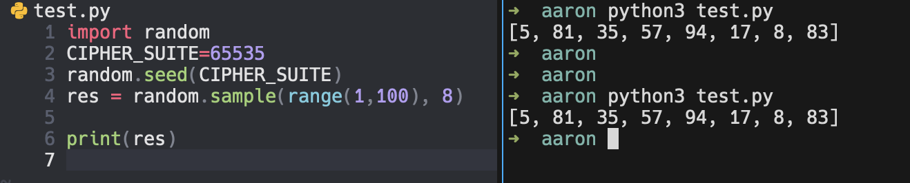
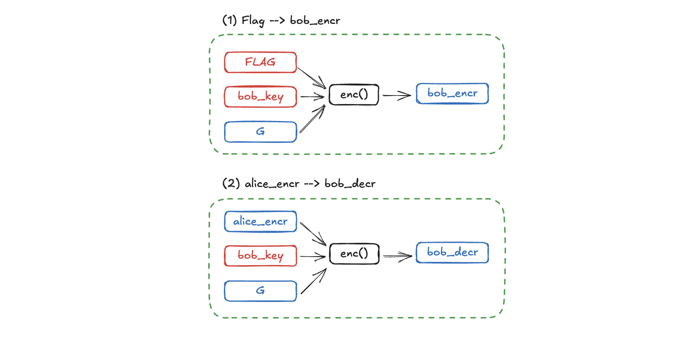

SekaiCTF2024
👾 Some Trick
이번 대회에서 가장 쉬운 난이도로 출제된 Crypto 문제이다. 문제 코드는 아래와 같다.
import random
from secrets import randbelow, randbits
from flag import FLAG
CIPHER_SUITE = randbelow(2**256)
print(f"oPUN_SASS_SASS_l version 4.0.{CIPHER_SUITE}")
random.seed(CIPHER_SUITE)
GSIZE = 8209
GNUM = 79
LIM = GSIZE**GNUM
def gen(n):
p, i = [0] * n, 0
for j in random.sample(range(1, n), n - 1):
p[i], i = j, j
return tuple(p)
def gexp(g, e):
res = tuple(g)
while e:
if e & 1:
res = tuple(res[i] for i in g)
e >>= 1
g = tuple(g[i] for i in g)
return res
def enc(k, m, G):
if not G:
return m
mod = len(G[0])
return gexp(G[0], k % mod)[m % mod] + enc(k // mod, m // mod, G[1:]) * mod
def inverse(perm):
res = list(perm)
for i, v in enumerate(perm):
res[v] = i
return res
G = [gen(GSIZE) for i in range(GNUM)]
FLAG = int.from_bytes(FLAG, 'big')
left_pad = randbits(randbelow(LIM.bit_length() - FLAG.bit_length()))
FLAG = (FLAG << left_pad.bit_length()) + left_pad
FLAG = (randbits(randbelow(LIM.bit_length() - FLAG.bit_length()))
<< FLAG.bit_length()) + FLAG
bob_key = randbelow(LIM)
bob_encr = enc(FLAG, bob_key, G)
print("bob says", bob_encr)
alice_key = randbelow(LIM)
alice_encr = enc(bob_encr, alice_key, G)
print("alice says", alice_encr)
bob_decr = enc(alice_encr, bob_key, [inverse(i) for i in G])
print("bob says", bob_decr)🕶️ 문제 분석
FLAG에 적당한 padding 을 붙이는 것으로 시작한다. 자세히 보면 앞 뒤로 같은 길이의 패딩을 붙이고 가운데에 FLAG가 그대로 남아있는 형태다.
이후 enc() 함수와 랜덤으로 생성한 bob_key, alice_key를 이용해서 FLAG 값으로부터 아래 세 값을 생성한다.
bob_encralice_encrbob_decr
enc() 함수의 세 번째 파라미터인 는 순열(permutation)을 원소로 갖는 집합이다.
문제 코드의 GNUM = 79와 GSIZE = 8209를 참고하면 아래와 같이 정리된다.
💡 풀이 아이디어
대회에서 제공한 Write-up을 읽으면서 문제 풀이 방법을 분석 중입니다.
(1) 복원
우선 5~7번 라인의 CIPHER_SUITE를 획득할 수 있음을 이용해야 한다.
python 에서 random 함수의 seed를 알 수 있다면 동일한 random value를 얻을 수 있기 때문이다.

따라서, 를 완전히 복원할 수 있다.
(2) inverse operation
이제 남은 것은 enc()함수의 역연산 가능 여부를 확인해야 한다.
enc()함수를 다시 한번 적어보면 아래와 같다.
def enc(k, m, G):
if not G:
return m
mod = len(G[0])
return gexp(G[0], k % mod)[m % mod] + enc(k // mod, m // mod, G[1:]) * mod 가 존재하지 않을 경우(비어있을 경우)에는 을 반환하고, 이외에는 재귀적으로 enc()를 호출하고 있음을 알 수 있다. enc() 함수를 수식으로 풀어서 적으면 아래와 같다.
이를 한 줄로 적으면 아래와 같다.
참고로 gexp()함수는 아래와 같은데, 를 반복적으로 permutate 하는 함수이다.
즉, 의 원소 순서만 섞어주는 함수로 이해하면 된다.
def gexp(g, e):
res = tuple(g)
while e:
if e & 1:
res = tuple(res[i] for i in g)
e >>= 1
g = tuple(g[i] for i in g)
print("[+]", g)
input("")
return res
단순히 순서를 뒤바꾸는 작업이므로 gexp() 의 역연산을 구하는 것은 간단하다.
식 의 우항의 아래 식을 다음과 같이 생각할 수 있다.
gexp()를 거친 수의 집합 에서 번째 수를 선택하고 만큼 곱한다.
이러한 연산에 대한 역연산을 구하면 될 것이다…
⚙️ dec() 함수 만들기
enc(k, m, G)함수를 다시 적어보면 아래와 같다.
를 만큼 뒤섞고(
gexp) 번째 수를 뽑은 뒤 를 곱한 수들의 합을 구하는 함수
덧셈으로 이어지는 각 항은 결국 로 구분되는 독립항으로 이해할 수 있다. 따라서, 각 항의 연산 중 핵심이 되는 “숫자로부터 index 찾기”를 “index로부터 숫자 찾기”로 역연산하기만 하면 된다.
이를 python의 list.index()로 할 수 있다.
함수 dec(k, ct, G)를 완성하면 아래와 같다.
def dec(k, ct, G):
if not G:
return 0
mod = len(G[0])
return list(gexp(G[0],k % mod)).index(ct % mod) + dec(k // mod, ct // mod, G[1:]) * mod
🎯 풀이 과정
🔑 bob_key 구하기
문제 파일에서 bob_key를 사용하는 부분은 아래와 같다.
bob_key = randbelow(LIM)
bob_encr = enc(FLAG, bob_key, G)
print("bob says", bob_encr)
# ...
bob_decr = enc(alice_encr, bob_key, [inverse(i) for i in G])
print("bob says", bob_decr)첫 번째는 FLAG를 암호화 할 때 쓰이고, 다음은 bob_decr을 만들 때 사용한다.
자연스럽게 dec()함수를 작성해서 bob_key를 알아내고, 이를 이용해 bob_encr로부터 FLAG를 알아내면 될 것이라 예상할 수 있다.
아래 그림은 bob_key가 사용되는 과정을 표시해 보았다. 함수와 관련된 데이터는 두 종류로 구분된다.
- 빨강: 현재 알 수 없는 데이터
- 파랑: 이미 알고 있는 데이터

이 때 주의할 점은 위 그림의 (2)에서 사용할 함수와 (1)에서 사용할 함수가 서로 다르다는 점이다. 그림에서도 알 수 있듯이 key와 FLAG는 각각 파라미터의 위치가 다르기 때문에 함수도 적절히 수정해서 사용해야 한다.
# key recovery
def dec1(k, ct, G):
if not G:
return 0
mod = len(G[0])
enc_ = ct % mod
return solve1(G[0],k % mod, enc_) + dec1(k // mod, ct // mod, G[1:]) * mod# decrypt ciphertext
def dec2(ct, m, G):
if not G:
return 0
mod = len(G[0])
enc_ = ct % mod
return solve2(G[0], m % mod, enc_) + dec2(ct // mod, m // mod, G[1:]) * mod아래는 전체 풀이 코드다.
# from pwn import *
import random
from tqdm import tqdm
from Crypto.Util.number import *
GSIZE = 8209
GNUM = 79
LIM = GSIZE**GNUM
def gen(n):
p, i = [0] * n, 0
for j in random.sample(range(1, n), n - 1):
p[i], i = j, j
return tuple(p)
def gmul(g,res):
return tuple(res[i] for i in g)
def gexp(g, e):
res = tuple(g)
while e:
if e & 1:
res = tuple(res[i] for i in g)
e >>= 1
g = tuple(g[i] for i in g)
return res
def solve1(g,e, enc):
return list(gexp(g, e)).index(enc)
def solve2(g,m, enc):
res = tuple(g)
for k in tqdm(range(GSIZE)):
if g[m] == enc:
break
g = gmul(g,res)
return k
def enc(k, m, G):
if not G:
return m
mod = len(G[0])
return gexp(G[0], k % mod)[m % mod] + enc(k // mod, m // mod, G[1:]) * mod
def dec1(k, ct, G):
if not G:
return 0
mod = len(G[0])
enc_ = ct % mod
return solve1(G[0],k % mod, enc_) + dec1(k // mod, ct // mod, G[1:]) * mod
def dec2(ct, m, G):
if not G:
return 0
mod = len(G[0])
enc_ = ct % mod
return solve2(G[0], m % mod, enc_) + dec2(ct // mod, m // mod, G[1:]) * mod
def inverse(perm):
res = list(perm)
for i, v in enumerate(perm):
res[v] = i
return res
# dummy data
CIPHER_SUITE = 110591768297227245694497075029453123404757949656068778741944453447307514557341
bob_encr = 1019955973091606344105974034536959850924221029536340863495490757266623622251639116575406599272379986504150815403294296903136024122720975669315974276419982334539242945812082775004047360956546317688825136509364533584200387334257007746565220068260899614989644890030285148343911852151206621514102132313767907733673
alice_encr = 1240660982730025957175758244124923399048746872643870410721255945058668243552335827223593172627145131088501509555898392384088472634111784321259590911964321541215354892744828673243690220710495911725108988198450229978193717403514990761647743246013044350297875200868413162779571713661073187779151522561367421450872
bob_decr = 259950988951200637161457069201401492001721963672458806676176664354990083485862450485298078515232656249237939730090701224274750329969454342545138292391584726883394883558284135928317645141496868238770669561449771267288946094727795428614693143377196155730991822071791666972919492764192583740581384680308575457001
random.seed(CIPHER_SUITE)
G = [gen(GSIZE) for i in range(GNUM)]
G_inv = [inverse(i) for i in G]
alice_key = dec1(bob_encr, alice_encr, G)
print("FIN1",alice_key)
bob_key = dec1(alice_encr, bob_decr, G_inv)
print("FIN2",bob_key)
FLAG = dec2(bob_encr, bob_key, G)
print(bin(FLAG)[2:].index(bin(bytes_to_long(b"SEKAI{"))[2:]))
for i in range(int(FLAG).bit_length()):
if long_to_bytes(FLAG >> i)[-1] == ord("}"):
print(long_to_bytes(FLAG >> i))